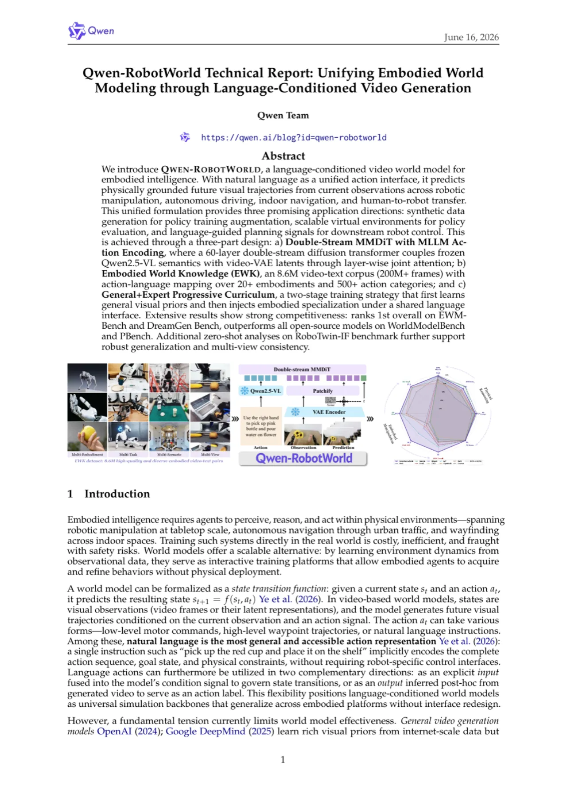
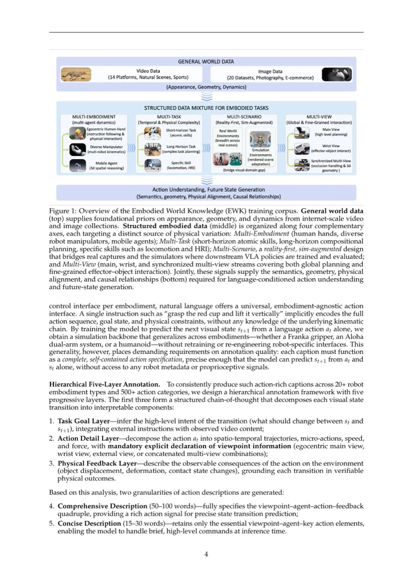
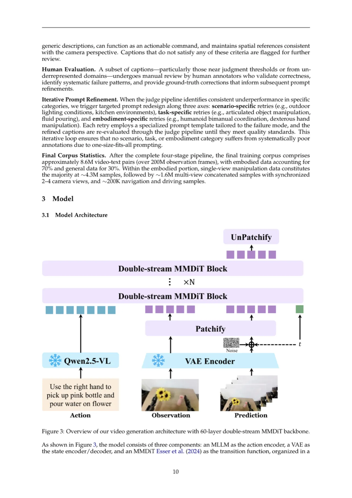
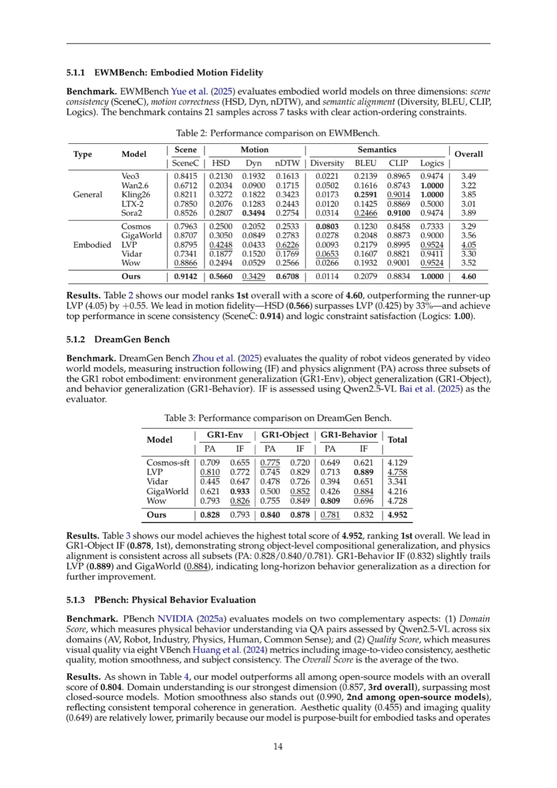
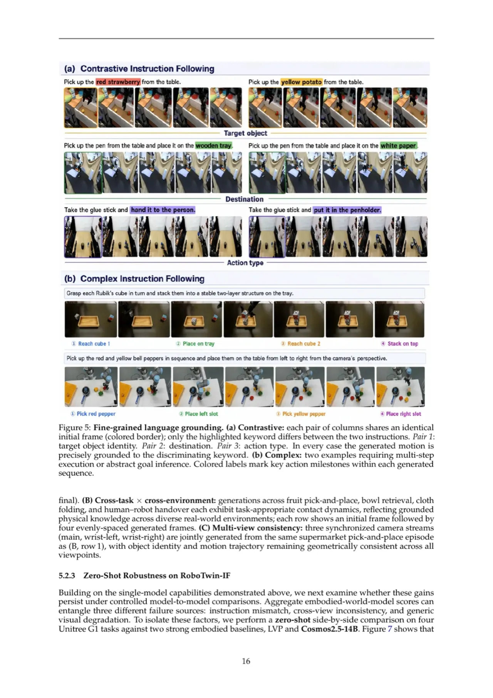

Qwen-RobotWorld 以自然语言为统一动作接口，通过一个双流 MMDiT 扩散模型，将机器人操作、自动驾驶、室内导航和人到机器人迁移统一建模为语言条件视频生成任务。模型在 EWMBench 总分第一（4.60），在 DreamGen Bench 总分第一（4.952），并在 WorldModelBench 超越所有开源模型（8.99）。
具身智能要求智能体在物理环境中感知、推理并行动——覆盖桌面机器人操作、城市自动驾驶与室内导航等场景。世界模型通过从观测数据中学习环境动力学，充当可扩展的虚拟训练平台。然而，现有方法存在根本矛盾：通用视频生成模型缺乏物理接触约束，而专用具身模型又依赖 joint angles / waypoints 等机器人特有表示，难以跨平台泛化。
"natural language is the most general and accessible action representation … a single instruction such as 'pick up the red cup and place it on the shelf' implicitly encodes the complete action sequence, goal state, and physical constraints, without requiring robot-specific control interfaces."


Qwen-RobotWorld 通过三大创新实现统一具身世界建模：(a) Double-Stream MMDiT with MLLM Action Encoding——将冻结的 Qwen2.5-VL 作为动作编码器，与 VAE 视觉流在每个 Transformer 层通过双向 cross-attention 融合；(b) Embodied World Knowledge (EWK)——8.6M 视频-文本语料，覆盖 20+ 机器人形态与 500+ 动作类别；(c) General + Expert Progressive Curriculum——先学通用视觉先验，再进行具身专项精调。

使用冻结的 Qwen2.5-VL 而非轻量级 T5 / CLIP 编码动作指令，具备两大优势：(1) 其深度语言理解能力可将复杂、组合式指令精确解析为控制信号；(2) 其内化的世界知识（如"机器臂关节有固定长度"）隐式约束物理可行转移空间，结合 T2I 协同训练，可在无需显式几何提示的情况下防止跨帧物体形变。
人到机器人迁移被建模为视频编辑任务：输入序列由三段构成——(1) 场景条件（原始人手操作视频，遮去手部）、(2) 机器人参考（MuJoCo 渲染的目标机器人轨迹）、(3) 待生成段（去噪为最终机器人执行视频）。三段共享同一 VAE-MMDiT pipeline，用 3D RoPE 时序索引区分。联合 attention 使生成段同时关注场景外观、机器人运动与语言动作语义，无需修改架构即可完成跨形态合成。
核心挑战是表示异构性：机械臂用 joint angles，驾驶用转向角，导航用方向向量——每类需要独立模型。EWK 通过 action-language mapping 框架将 20+ 机器人形态、500+ 动作类别统一映射至自然语言接口。标注采用五层分级框架：(1) Task Goal Layer，(2) Action Detail Layer（必须显式声明视角），(3) Physical Feedback Layer，(4) 50-100 词综合描述，(5) 15-30 词简洁指令。训练时以 50/50 比例采样，使模型同时具备详细轨迹执行与高层命令理解能力。
预训练阶段在 T2I / T2V / TI2V 三任务上联合训练，建立通用视觉先验（对象运动、光照变化、碰撞动力学）。SFT 精调阶段采用四阶段数据混合调度：单视角操作 → 多视角扩展 → 多视角拼接生成 → 复杂任务与跨领域数据。操作数据在约 90% 的采样权重下主导，确保物理接地深度；多视角拼接和导航/驾驶数据各约 5%，提供广度。Asymmetric 3D RoPE（时序维度 16 维、空间各 56 维）保证推理时跨同步相机视角的几何一致性。
在四个基准上综合评测，对标两类 baseline：(1) 通用视频生成模型（Sora2、Veo3、Wan2.6、Kling、LTX-2）；(2) 具身世界模型（Cosmos、GigaWorld、LVP、Vidar、Wow）。
EWMBench 在场景一致性（SceneC）、运动正确性（HSD / Dyn / nDTW）、语义对齐（Diversity / BLEU / CLIP / Logics）三维评测，共 21 样本、7 类任务。
| 模型 | SceneC | HSD ↑ | Dyn | nDTW | CLIP | Logics | Overall |
|---|---|---|---|---|---|---|---|
| LVP（次优具身） | 0.8795 | 0.4248 | 0.0433 | 0.6226 | 0.8995 | 0.9524 | 4.05 |
| GigaWorld | 0.8707 | 0.3050 | 0.0849 | 0.2783 | 0.8873 | 0.9000 | 3.56 |
| Wan2.6（最优通用） | 0.6712 | 0.2034 | 0.0900 | 0.1715 | 0.8743 | 1.0000 | 3.22 |
| Qwen-RobotWorld（Ours） | 0.9142 | 0.5660 | 0.3429 | 0.6708 | 0.8834 | 1.0000 | 4.60 |
HSD（0.566）较次优 LVP（0.425）提升 +33%；场景一致性 SceneC（0.914）与逻辑约束满足 Logics（1.00）均居首位。
评测 GR1 机器人三个泛化子集（Env / Object / Behavior）的 Physics Alignment（PA）与 Instruction Following（IF）。
| 模型 | GR1-Env PA | GR1-Env IF | GR1-Object PA | GR1-Object IF | GR1-Behavior PA | GR1-Behavior IF | Total |
|---|---|---|---|---|---|---|---|
| LVP | 0.810 | 0.772 | 0.745 | 0.829 | 0.713 | 0.889 | 4.758 |
| GigaWorld | 0.621 | 0.933 | 0.500 | 0.852 | 0.426 | 0.884 | 4.216 |
| Wow | 0.793 | 0.826 | 0.755 | 0.849 | 0.809 | 0.696 | 4.728 |
| Qwen-RobotWorld（Ours） | 0.828 | 0.793 | 0.840 | 0.878 | 0.781 | 0.832 | 4.952 |
GR1-Object IF 达 0.878（第 1），体现出色的物体级组合泛化能力。GR1-Behavior IF（0.832）略低于 LVP（0.889）与 GigaWorld（0.884），长程行为泛化仍有改进空间。
WorldModelBench 评测指令跟随（0-3 分）、常识和物理遵从（Newton 定律、质量守恒、流体动力学、重力——5 类物理违反）。Qwen-RobotWorld 总分 8.99，超越所有开源模型，物理遵从四项全满（1.00），指令跟随 2.33/3.0，常识分因输出分辨率较低略有差距。PBench Overall 0.804（开源最优），Domain 理解 0.857（全体第 3，超越大多数闭源模型），Motion Smoothness 0.990（开源第 2）。


在 RoboTwin-IF 基准零样本评测中，尽管 Qwen-RobotWorld 训练时仅混入少量开源 RoboTwin 数据，仍展现出强劲的零样本性能与稳定的多视角一致性。与 LVP 和 Cosmos2.5-14B 对比，LVP 更多出现任务未完成执行，Cosmos2.5-14B 在复杂指令下动作-结果对齐更弱，而 Qwen-RobotWorld 在保持正确物体/动作对应和目标达成方面更一致。跨领域泛化（人到机器人迁移、自动驾驶、室内导航）进一步验证语言条件状态迁移函数在跨形态与跨场景的通用性。
论文在 WorldModelBench 讨论中明确指出："the common-sense gap [is] attributable to our lower output resolution"——Qwen-RobotWorld 以低于通用视频生成器的输出分辨率运行，导致 VBench 像素级质量分（Aesthetic、Imaging quality）偏低，尽管此分辨率已足够下游机器人控制任务使用。
在 DreamGen Bench 的 GR1-Behavior IF 子集，Qwen-RobotWorld（0.832）略逊于 LVP（0.889）与 GigaWorld（0.884）。论文明确将其列为"a direction for further improvement"，表明长时序行为泛化尚未达到最优水平。
EWK 采用五层分级标注框架，由 Qwen2.5-VL 自动生成后经人工审核和迭代提示精调，整个标注流水线对模型质量高度依赖。自动标注中偶发的视角描述不一致或物理反馈缺失，会通过质量过滤回流重标注，但仍可能引入系统性偏差（inferred from design of the annotation pipeline）。
EWK 中操作数据约 5.9M（约 68.6%），自动驾驶约 200K（2.3%），室内导航 6K+，Human-to-Robot 数据通过自动 MANO 流水线生成。导航和驾驶域的相对稀疏可能导致这些场景的生成质量不如操作场景（inferred from data statistics）。